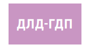

ГОДИШНА ДАНОЧНА ПРИЈАВА
за утврдување на данокот на личен доход
УПАТСТВО ЗА ПОПОЛНУВАЊЕ
Управата за јавни приходи до граѓанинот доставува годишна даночна пријава (образец ДЛД-ГДП) за утврдување на годишен данок на личен доход, со однапред пополнети
податоци за доходот остварен во земјата и странство.
Во образецот ДЛД-ГДП пополнети се податоците за доходот кои граѓанинот ги остварил во текот на календарската година и тоа: доход од работа, доход од самостојна
дејност, доход од авторски и сродни права, доход од продажба на сопствени земјоделски производи, доход од права од индустриска сопственост, доход од закуп и подзакуп,
доход од капитал, капитални добивки, добивки од игри на среќа, доход од осигурување и друг доход.
Пополнетата годишна даночна пријава (образец ДЛД-ГДП) се доставува до граѓанинот најдоцна до 30 април во тековната година, за доходот што го остварил во претходната
година.
Должни сте годишната даночна пријава да ја потврдите или коригирате најдоцна до 31 мај во тековната година.
Доколку пред истекот на рокот на застареност, Управата за јавни приходи утврди непријавен или неточно пријавен исплатен или остварен доход, на даночниот
обврзник му доставува Службена исправка на потврдената годишна даночна пријава.
Доколку не ја потврдите или коригирате пополнетата годишна даночна пријава до 31 мај во тековната година, истата ќе се смета за ПОТВРДЕНА. Коригираната годишна
даночна пријава ја разгледува Управата за јавни приходи и во рок од 60 дена од поднесувањето на коригираната пријава ве известува повратно.
Остварен доход
За секој одделен “вид на остварен доход” внесен е износот во соодветните колони според видот на доходот.
- Бруто износ на доход - во полето „Бруто износ на доход“ внесен е износот на бруто доходот за секој одделен вид на доход, односно збирот на нето доходот што сте го
примиле, зголемен за износот на данокот на личен доход и износот на искористените одбитоци во претходната година. По исклучок, кај доходот од реден број 2 (нето
доход остварен од вршење на самостојна дејност) внесен е износот на нето-доходот утврден во полето 22 од Даночниот биланс (образец ДЛД-ДБ).
- Вкупен износ на платени придонеси / признаени трошоци - внесен е износот на платените придонеси, како и трошоците што ја намалиле бруто-основата при
пресметување на аконтациите на данокот, а кои се утврдени во Законот за данокот на личен доход.
На реден број 1.1. и реден број 1.2., покрај платените придонеси за пензиско и инвалидско осигурување, здравствено осигурување, дополнителен придонес за
здравствено осигурување и вработување, како одбитоци внесен е износот и на пресметаните придонеси за кои со посебни прописи е предвидено ослободување од
плаќање, но кои ја намалиле основата при пресметувањето на аконтациите на данокот.
Кај доходот на реден број 2 (нето-доход остварен од вршење на самостојна дејност) како одбиток на нето-доходот е впишано само ослободувањето кое се пресметува од
нето-основата (член 28 ставови од (1) до (5) од Законот за данокот на личен доход или утврдено со друг закон), додека платените придонеси не се искажани како одбиток,
бидејќи се веќе вклучени како трошок при утврдувањето на нето доходот.
Кај доходот на реден број 3, 4, 5, 6, 8 и 11 како одбитоци се наведени пресметаните износи на трошоци кои во Законот за данокот на личен доход се утврдени во
определен процент од бруто-основата
- Вкупен износ на пресметан ДЛД - внесени се износите на пресметаниот данок на личен доход во текот на календарската година (даночниот период).
- Вкупен износ на платен ДЛД - внесени се износите на платените аконтации на данокот на личен доход во текот на календарската година (даночниот период).
Износ на донирани финансиски средства
Внесени се износите на вашите донирани финансиски средства во јавни дејности во претходната годината (даночен период).
Доколку износите не се совпаѓаат со средствата кои вие сте ги донирале, во полето за корекција внесете го вкупниот износ на донирани финансиски средства во јавни дејности
во претходната година.
Утврден годишен данок на личен доход
Врз основа на податоците за остварениот доход, Управата за јавни приходи изврши утврдување на годишниот данок на личен доход, пресметаниот годишен данок за плаќање
и разликата за доплата на данокот на личен доход за наведениот даночен период (календарска година).
Износот на повеќе платениот данок на личен доход можете да го оставите како аконтација за плаќање за нареден период или да го барате за враќање со запишување на
знак “x” пред полето од редниот број 12. Истовремено пополнете го и полето Трансакциска сметка и полето Назив на банка.
Потврда на Годишна даночна пријава
- Со означување на полето ПОТВРДУВАМ се согласувате и ја потврдувате точноста на податоците за доходот и утврдениот данок на личен доход кои се пополнети во
годишната даночна пријава од страна на Управата за јавни приходи.
- Доколку го означите полето КОРИГИРАМ, задолжително во празните полиња (под податоците пополнети од Управата за јавни приходи) внесете ги точните износи за
соодветниот вид на доход, односно извршете корекција на пополнетите податоци за бруто износот на доходот кој сте го оствариле, износот на одбитоците и платените
аконтации на данокот на личен доход.
Напомена: Не ги пополнувајте празните полиња кај видовите на доход за кои не вршите корекција на податоците пополнети од Управата за јавни приходи.
Потврдата или корекцијата на Годишната даночна пријава можете да ја извршите по пат на пренос на податоци во електронска форма, преку системот е-Персонален данок
https://e-pdd.ujp.gov.mk или во хартиена форма до Управата за јавни приходи.
При пополнување на Годишната даночна пријава во хартиена форма, податоците внесете ги читливо и целосно. Податоците внесете ги во точно означените полиња.
Не впишувајте ништо во полињата кои ги пополнува Управата за јавни приходи.
Потврдил/Коригирал
- Задолжително внесете назив и ЕДБ на лицето кое ја потврдило/коригирало само во случај кога сте ополномоштиле правно лице или вршител на дејност
(сметководствено биро) во ваше име и за ваша сметка да ја потврди или коригира пријавата.
Ополномоштеното правно лице или вршител на дејност (сметководствено биро) кое ја потврдило/коригирало ДЛД-ГДП, задолжително ја потпишува на означеното
место.
- Задолжително внесете име и презиме и ЕМБГ на составувачот само во случај кога сте ополномоштиле друго физичко лице во ваше име и за ваша сметка да ја потврди
или коригира пријавата.
Ополномоштеното физичко лице кое ја потврдило/коригирало ДЛД-ГДП, задолжително ја потпишува на означеното место.
Податоци за потписникот
Задолжително внесете име и презиме, ЕМБГ и потпис на потписникот.
Доколку потписник е ополномоштено лице, задолжително внесете го својството на потписникот
Промена на адресни податоци
Доколку вашите адресни и контакт податоци од пополнетата годишна даночна пријава не се точни, потребно е истите да ги ажурирате со повикување на Инфо центарот на УЈП
(0800 33 000 или 02/3253 200), или да доставите пријава УЈП-РДО до Управата за јавни приходи.
* Образецот е објавен во „Службен весник на РС.М.“, бр.101/2020 и важи од 15.04.2020